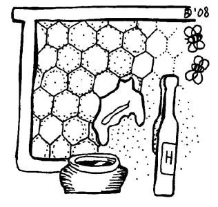
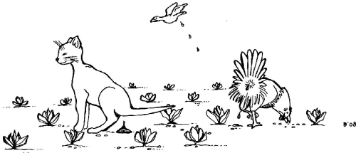
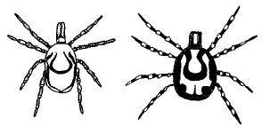
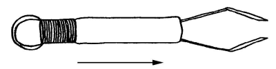
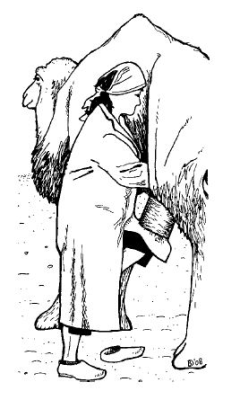

How people get infected: transmission, risk factors
How people get infected: transmission, risk factors
{kind=link}
Routes of transmission
1 Via direct contact between man and animal
2 Indirectly via food of animal origin
3 Indirectly via water and soil
4 Indirectly via insects, ticks, or rats/mice
Transmission via direct contact between humans and animals
Table 1: Some major zoonotic diseases and ways of transmission via direct contact.
| Type of direct contact | Disease | Extra information |
| Biting / scratching | Rabies | Causes paralysis in all animals and in humans. Can also be transmitted when saliva drips on the skin of someone. |
| Petting*, handling or brushing | Ecthyma/orf Ringworm Scabies | Causes blisters in sheep/goats/humans Causes red circles on the skin of animals and humans Causes severe itching in animals and humans. Animal scabies does not survive for long on humans. |
| Touching birth fluids | Brucellosis | May cause abortion |
| Touching sick or dead birds | Avian influenza | Is often deadly in poultry (but not in other birds) and is sometimes deadly in humans |
Indirect transmission via food of animal origin
|  |
| Honey may contain certain microbes and is therefore not safe for very small children |
| (c) Agromisa Foundation and CTA, Wageningen, 2008.
|
Honey
Salmonellosis
Table 2: Some major food-borne zoonotic diseases and how they are transmitted.
| Type of food | Disease | Some extra information |
| Meat | Toxoplasmosis Trichinellosis Cysticercosis and Tapeworms Anthrax Sarcocystosis* Campylobacter | In raw pork or mutton In pork Tapeworms from pork are dangerous; tapeworms from beef are not dangerous. The intestinal form of anthrax is caused by eating the meat of animals that died from anthrax. Causes various symptoms: slight headache, painful muscle swelling, influenza-like symptoms. Present in raw meat |
| Raw Milk and dairy products (fresh cheese) | Brucellosis Tuberculosis | Gives influenza-like symptoms when transmitted via milk. See also Table 1. Bovine tuberculosis affects the stomach and intestines. |
| Eggs | Salmonellosis | Present in raw eggs; may be deadly to very young, old or weak people. |
| Fish and seafood | Fish liver flukes | In fresh water fish and snails, mainly in southeast Asia. They cause chronic and painful infections in the liver and bile duct. |
| Honey | Botulism | Especially a problem for babies. |
- When plants such as lettuce are irrigated with water contaminated with human excrement containing parasites, cysticercosis - in particular - can occur.
- People eating lettuce that has been fertilised with cow manure containing E. coli O157 bacteria (also called VTEC) can become infected with these bacteria.
- The Nipah virus can be transmitted through droppings of bats. People who eat fruit contaminated with bat-droppings could get Nipah.
Indirect transmission via the environment
|  |
| Animals droppings on agricultural land |
| (c) Agromisa Foundation and CTA, Wageningen, 2008.
|
Box 3: Faecal contamination of waterFaecal contamination is contamination of water by excrement, dung. Microbes contaminate water when animals or humans defecate in the water. Some examples are:
|
Indirect transmission via insects, ticks or other creatures
| Diseases spread by insects from person to person, without an animal reservoir are NOT called zoonoses (for example malaria). |
Table 3: Some major zoonotic diseases and transmission via insects, ticks and other animals
| Vector | Disease | Some extra info |
| Mosquitoes | Equine encephalitis* Rift Valley Fever, Yellow fever, Dengue Japanese encephalitis West Nile Virus | Western and eastern equine encephalitis (WEE and EEE) occur in North America. Venezuelan encephalitis is found in South and Central America. In severe cases brain problems occur that can cause paralysis. Rift Valley fever, Yellow fever and Dengue are all hemorrhagic fevers (HF). All HF begin with fever, muscle pain and fatigue. Sometimes there is a second phase with severe bleeding (haemorrhage). Japanese encephalitis: Pigs and birds are reservoirs; not only present in Japan, but in whole southeast Asia. West Nile Virus: Mainly in North America. |
| Sand fly | Leishmaniasis | There are several forms of Leishmaniasis and not all of them are zoonoses. |
| Vinchuca | Chagas' Disease | The vinchuca is a kind of beetle. Symptoms vary from nothing to very severe illness. |
| Fleas | Pest / Plague | Has caused major epidemics in the past; is now only present in certain areas of the world. |
| Tsetse fly | Sleeping sickness | Animals do not get ill from human sleeping sickness, but they can be a reservoir*. |
A vector not mentioned in Table 3 is the tick. Ticks are small insects with an oval body, a head and eight legs. There are around 800 sorts of ticks which all feed on blood. Toxins or microbes in the tick's saliva are transmitted through the bite into the human or animal blood stream and can cause disease.
Examples of tick-borne zoonoses are Lyme disease (found in Europe and North America), tick-bite fever (has different names in different parts of the world) Q-fever and Crimean-Congo hemorrhagic fever (mainly in Africa).
Ticks not only transmit zoonotic diseases they also transmit other animal diseases such as East Coast fever, babesiosis and "heart water disease" in cattle, which cause major problems and economic losses.
|  |
| Figure 4: Two types of ticks that can be carriers of many different (zoonotic) diseases: Ixodes ticks (left, also called 'bont tick') and Amblyomma ticks. Amblyomma ticks (right) mostly sit on the udder and under the tail of animals, while Ixodes ticks can be found on the whole body of animals and humans. The ticks in the figure are enlarged; normally they are half a centimetre in size, at most. |
| (c) Agromisa Foundation and CTA, Wageningen, 2008.
|
|  |
| Figure 5: Small pair of curved forceps or tweezers made of metal. The middle section is movable and can be moved back and forth to open and close the tweezers. |
| (c) Agromisa Foundation and CTA, Wageningen, 2008.
|
Box 4: How to remove ticks from humans?The best way to prevent tick-borne zoonoses in humans is to prevent ticks from biting. This can be done by being properly dressed (cover arms and legs) or by using repellents*. If you find a tick on your body you must remove it as quickly as possible. Be careful! If you squeeze the tick too much, it can inject its saliva into your body before you get it out of your skin and so it can infect you anyway. Use a small pair of curved forceps or tweezers (There is one specially designed for the purpose, see Figure 5). Grasp the tick firmly with the tweezers as close to the skin as possible. Pull the tick gently from your skin. Twisting or turning is not necessary. After removal, check whether there are no parts of the tick left. If these parts are difficult to remove ask a medical worker to do it. |
People at risk
Professional contacts
- Veterinarians and vaccinators
- Butchers and meat inspectors
- Milkers and milk inspectors
- Inseminators
- Farmers and people who work with livestock
- Tanners, people who work with leather
- People who work with crude wool
|  |
| A woman wearing protective clothing has less risk of an infection while milking a camel. |
| (c) Agromisa Foundation and CTA, Wageningen, 2008.
|
People with a weak immune system
- Young children: because their immune system is not yet fully developed
- Very old people: high age results in a weaker immune system
- Malnourished people: the immune system does not function well if certain vitamins are lacking or people are not getting enough food
- People with diseases affecting the immune system, such as HIV/AIDS or leukaemia.
Pregnant women
More Risk factors
- Poor hygiene
- Travelling
- Hunting
- Certain eating habits
- Poor meat inspection
- Poor slaughter hygiene
- Water management
- Stray dogs
- Markets with live animals
Poor hygiene
Human behaviour such as travelling, eating habits or hunting
Meat inspection and slaughter hygiene
Poor water management
Other risk factors
Information Source Links
- Zoonoses - Diseases transmitted from animals to humans. Agromisia. (2008). Agrodok-Series No.46. ISBN Agromisa: 978-90-8573-105-4
Last updated:
| Unless otherwise stated, all content on the Infonet Biovision Website is licensed under a Creative Commons License | Disclaimer |